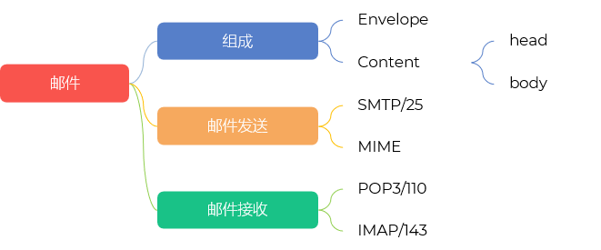
1942194789@qq.com
glpla@hotmail.com
撰写
显示
处理
通信
发送和接收邮件
能够同时充当客户和服务器
向发信人报告邮件传送情况
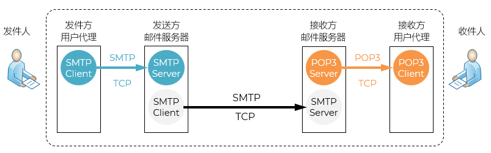
SMTP 诞生于 1982 年（甚至更早），而 HTTP 诞生于 1990 年
在 HTTP 出现之前，邮件系统已经建立了一套完整的生态，且工作得很好
如果让全球所有的邮件服务器改用 HTTP，成本极高，且没有这个必要
使用 HTTP POST 方法提交要发送的邮件
使用 HTTP GET 方法读取邮件
必须在计算机中安装用户代理软件
收发邮件不方便
不需要在计算机中再安装用户代理软件
计算机能联网，就能非常方便地收发电子邮件
界面非常友好
邮件发送
发送方邮件服务器使用端口 25
图中橙色部分
邮件中继；通常多级中继
接收方邮件服务器使用端口 25
图中蓝色部分
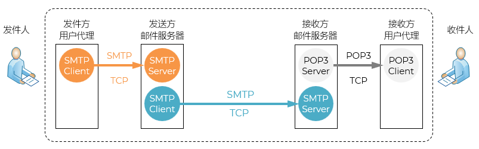
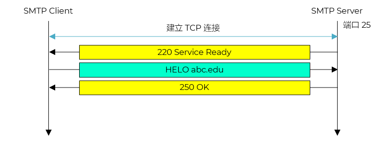
RFC 5322: Internet Message Format只规定了邮件内容中的首部 header 格式
邮件的主体 body 部分则让用户自由撰写
MAIL FROM: - 指定发件人
RCPT TO: - 指定收件人
服务器返回 250 OK 表示接受
DATA - 告诉服务器接下来是邮件内容
服务器回复 354 Start mail input... 表示可以开始输入
内容以 <CRLF>.<CRLF> 结束（即空行后跟一个点）
- 只有当一个行只包含一个单独的点（.）时，才被视为结束标志
- 点前面必须有 <CRLF>；点后面也必须有 <CRLF>
- 是传输控制指令。它不属于邮件本身
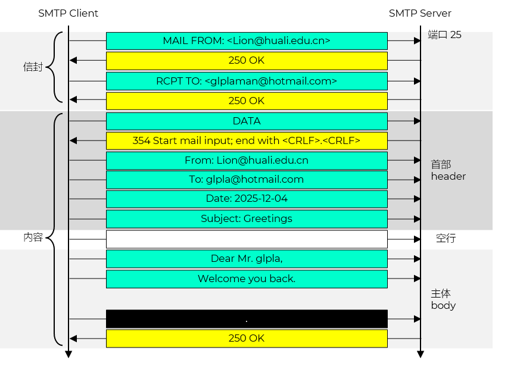
填表（Header） -> 画线（空行） -> 写信（Body） -> 贴封条（<CRLF>.<CRLF>）
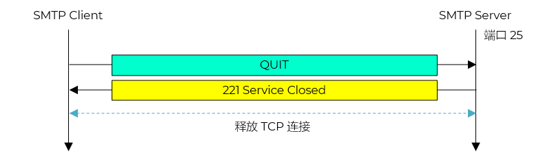
POP3：适合只想下载邮件并离线阅读的用户，但缺乏同步能力
IMAP：适合需要多设备同步、远程管理、实时更新的现代用户，是当前主流选择
非 ASCII 字符（如中文、阿拉伯文等）
附件（如图片、音频、视频、PDF 等二进制文件）
多部分消息体（例如：一封邮件同时包含纯文本和 HTML 版本）
如何标识内容类型（Content-Type）
如何对非 ASCII 数据进行编码（如 Base64）
如何将多个内容组合在一个消息中（multipart）
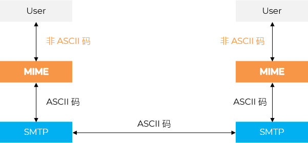
| item | desc |
|---|---|
| MIME-Version | MIME版本
通常为 1.0 |
| Content-Type | 指定主体 body 的内容类型
包括：主类型 type 和子类型 subtype，中间用 / 分开 如 text/plain、image/jpeg、multipart/mixed |
| Content-Transfer-Encoding | 编码类型
如 Base64、quoted-printable |
| Content-ID | 为内容部分分配唯一标识符
常用于 HTML 邮件中引用内嵌图片 |
| Content-Description | 内容的可读性描述
可选 |
| item | desc |
|---|---|
| text | 文本类；子类型 /plain /html /css /xml /csv；并指定编码，如 charset=utf-8 |
| image | 图像类；子类型 /jpeg /png /gif /webp /svg+ |
| application | 应用类；子类型 /json /javascript /xml /msword /octet-stream |
| multipart | 混合类；子类型 /form-data |
| audio | 音频类 |
| video | 视频类 |
MIME 标准原先定义了 7 个基本内容类型和 15 种子类型
MIME 允许发件人和收件人自己定义专用的内容类型
为避免可能出现名字冲突，标准要求为专用内容类型选择的名字要以字符串 X- 开始
| item | desc |
|---|---|
| multipart/mixed | 混合内容（正文+附件） |
| multipart/alternative | 同一内容的不同格式（如 text 和 HTML） |
| multipart/related | 主文档与关联资源（如 HTML + 内嵌图片） |
| item | desc |
|---|---|
| 7bit | 仅限 7-bit US-ASCII 字符
每行不能超过 1000 个字符（包括回车和换行） 适合纯英文文本邮件 默认编码方法 |
| 8bit | 8 位非 ASCII 编码，每行不能超过 1000/998 个字节（包括回车和换行）
必须遵守行长限制 |
| Binary | 8 位非 ASCII 编码，任意长度的字节串
没有行长限制 图片、可执行文件、压缩包等二进制文件 |
| Base64 | 将任意二进制（3字节）拆解重组为 4 个 7-bit ASCII 字符
适合图片、PDF、压缩包等二进制附件 |
| Quoted-printable | 英文/数字/常规标点原样发送
非 ASCII 字符（中文）或特殊字符转为 =XX (十六进制) 内容以纯文本为主，但包含少量中文或特殊符号的正文 |
邮箱：更多... → 查看 → 查看邮件源
邮箱：More options → Original Format
X-QQ-XMRINFO: OWPUhxQsoeAVDbp3OJHYyFg= X-QQ-XMAILINFO: NGbyafB8LluuNqt7R5YQ30r3cDvGGYg5XZqRcmOF9eHtGzFuQben31Nubuc7aw I2i8LhX6IoQ20fEPFHHQfsBU2U3hGcGcVCDLaMCXmDhclNibbKGNA2ASPYb1XyIL9F52OQ1AlyXUg sUXbKoq1qwhE0WDlfcJFvmDFbu8wDeMd4PU0N0k2+D09TakrbmjQsTc+SlxMoHhQ/94h3esED2YQF UdFTj5R5cN4BoBMDuIk9AXlTZFIjQ0JinkkB0MD1e6JnLEwc3dI4D7YDxYYsgJdl0f/TOYKy79KWl sMZqMb5OipYaPcfu4j9R5OzYp11PIFbuM6Q/zcUqchlk7acVYdOXwlD44uvA0wtw3D7utFIvpOTXn nzyiFvcP30wefkvbNMi2C7FzJ8z1iqDIcbUor/uGR8v6AHlA4nQYweA5Aa18kK0OBIVR6jaOyrICn S2J+cnrES7Qdww8GDrpBkiVtEPIlcmhBmm6oUQxYEaxA42KUI3iW/l/F2Fceaac8CyqXDW1oMeni4 Z2+TDTRmbyZPWi+xXTCMjGzMQZmhqwvFWD137uAaw8xnKCrP22WOZJtkAjiSp71enbDY1LWTBLFuf IyPWKcQJ8SoaxOozktuVXWjN8wC5hTbRr5DH+IuHmgPK0rstjHCj086C+odctwWg897sm4FLAHDLT RGhKobqQ9nLV+/oidfTV6NuQxU21tUpbXgcYXQcmiZ/ouI9Qn75SWq4Q0S90yd4FDwdzUzM+L6N6R 76WQ/a3sk0xfUywjFPkH/40+btzK267OIzYAcdVnkaE5sdjjix0yHA5HroqV7Qg6jbksbKHxHqYWU +YsSih5usBADVdPrKXEEJk4xl34p767QUVMgcgtGD6x9ZO4FqHhDRzoRBI9NqCBHmBjIBHPROL4dK nXCG60FEseN+tpKOR0/O9t18ixTQVSGYXk925oAq05ycgvaK0DqwqQM7vXsf+xigyb/QKpwbFdHRC RBRbv1PkIRf3QsBauBay/nr3TwMgimFJdp2TKTr4yhQdotbaJBiaHumPgY6PmaigUAg/5ayg== From: "=?utf-8?B?5aSn5qCR?=" <1942194789@qq.com> To: "=?utf-8?B?Z2xwbGE=?=" <glpla@hotmail.com> Subject: plain Mime-Version: 1.0 Content-Type: multipart/alternative; boundary="----=_NextPart_692BE173_47525DA0_1A5E35FA" Content-Transfer-Encoding: 8Bit Date: Sun, 30 Nov 2025 14:17:23 +0800 X-Priority: 3 Message-ID: <tencent_15DA81D51A3014EB4B54E9442B51DEC32109@qq.com> X-QQ-MIME: TCMime 1.0 by Tencent X-Mailer: QQMail 2.x X-QQ-Mailer: QQMail 2.x X-QQ-mid: xmsezc37-0t1764483443tc3x3o1cz ### header 结束 This is a multi-part message in MIME format. ### body 开始 ------=_NextPart_692BE173_47525DA0_1A5E35FA ### 分隔 Content-Type: text/plain; charset="utf-8" Content-Transfer-Encoding: base64 aGksdGhlcmUu ------=_NextPart_692BE173_47525DA0_1A5E35FA ### 分隔 Content-Type: text/html; charset="utf-8" Content-Transfer-Encoding: base64 PGRpdiBzdHlsZT0iZm9udC1mYW1pbHk6IFZlcmRhbmE7IGZvbnQtc2l6ZTogMTRweDsgY29s b3I6IHJnYig1NCwgMTE4LCAxNjYpOyBsaW5lLWhlaWdodDogMS40MzsiPmhpLHRoZXJlLjwv ZGl2PjxkaXYgY29udGVudGVkaXRhYmxlPSJmYWxzZSI+PGRpdiBzdHlsZT0icGFkZGluZy10 b3A6MTZweCI+PHA+PC9wPjwvZGl2PjwvZGl2Pg== ------=_NextPart_692BE173_47525DA0_1A5E35FA-- ### body 结束
邮件中不同位置的数据，使用不同的编码规则，目的各不相同；如整体使用 8bit 编码；内部仍然使用 base64
在复杂环境中追求最大兼容性的工程妥协 - 新旧机制并存
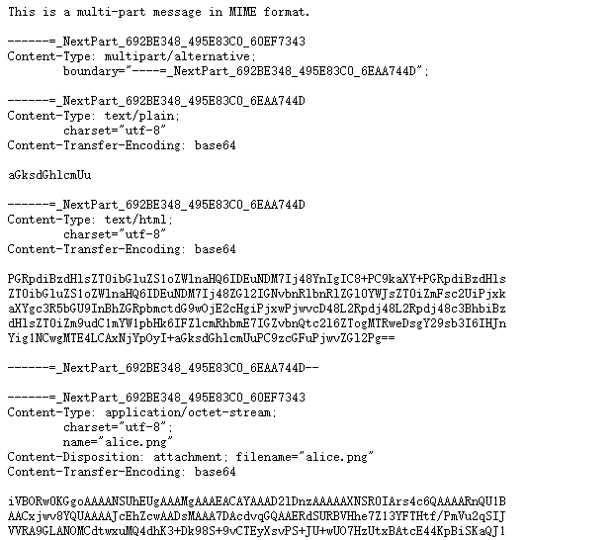
原始数据 → 字节序列（UTF-8） → Base64 → ASCII
一个中文使用 UTF-8 编码为3个字节
对与纯英文，ASCII 编码是 UTF-8 的子集，两者编码结果是一样的
控制字符（0–31，127）
可打印字符（32–126）
| item | desc |
|---|---|
| Character | 9 |
| Binary | 00111001 |
| Decimal | 57 |
| Hexadecimal | 0x39 |
| Type | 可打印 |
可变长度：ASCII 字符占 1 字节，中文通常占 3 字节，emoji 占 4 字节
完全兼容 ASCII：所有 ASCII 文本也是合法的 UTF-8
ASCII 是 UTF-8 的子集。对于纯英文（如 "Hello"），UTF-8 编码的结果和 ASCII 完全一样
互联网事实标准：HTML、邮件、JSON、Linux 系统默认使用 UTF-8
所有可打印的ASCII码，除 = 外，都不改变
其它：= + 每个字节对应的两个大写的十六进制
| 原始字节 | 01011001 |
|---|---|
| 十进制 | 57 |
| 十六进制 | 0x39 |
| Quoted-Printable | 39 |
| 原始字节 | 00111101 |
|---|---|
| 十进制 | 61 |
| 十六进制 | 0x3D |
| Quoted-Printable | =3D |
| 原始字节 | 10011101 |
|---|---|
| 十进制 | 157 |
| 十六进制 | 0x9D |
| Quoted-Printable | =9D |
能用就不管（普通字符原样输出）
自己人也要防（转义符自身必须转义，防止歧义）
不安全的必须伪装（非 ASCII 字符强制转义，确保 7-bit 安全）
补充 1 byte，则最后一个字符替换为 =
补充 2 byte，则最后两个字符替换为 ==
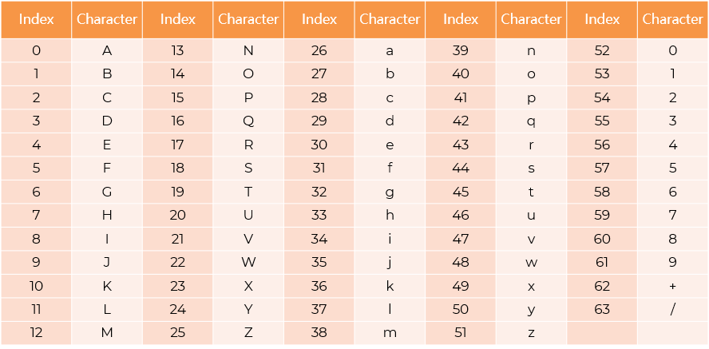
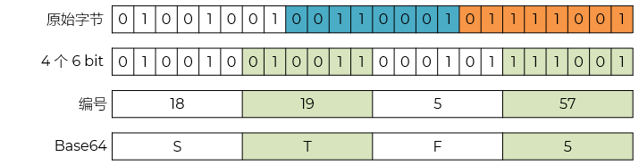
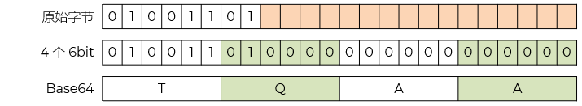
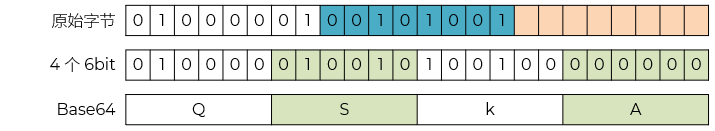
72 101 108 108 111
01001000 01100101 01101100 01101100 01101111
01001000 01100101 01101100 01101100 01101111 00000000
010010 000110 010101 101100 011011 000110 111100 000000
18 6 21 44 27 6 60 0
SGVsbG8A
SGVsbG8=
104 105 44 116 104 101 114 101 46
01101000 01101001 00101100 01110100 01101000 01100101 01110010 01100101 00101110
011010 000110 100100 101100 011101 000110 100001 100101 011100 100110 010100 101110
26 6 36 44 29 6 33 37 28 38 20 46
aGksdGhlcmUu
SMTP
MIME
POP3
IMAP
"7bit data" refers to data that is all represented as relatively short lines with 998 octets or less between CRLF line separation sequences [RFC-821]. No octets with decimal values greater than 127 are allowed and neither are NULs (octets with decimal value 0). CR (decimal value 13) and LF (decimal value 10) octets only occur as part of CRLF line separation sequences.
"8bit data" refers to data that is all represented as relatively short lines with 998 octets or less between CRLF line separation sequences [RFC-821], but octets with decimal values greater than 127 may be used. As with "7bit data" CR and LF octets only occur as part of CRLF line separation sequences and no NULs are allowed.